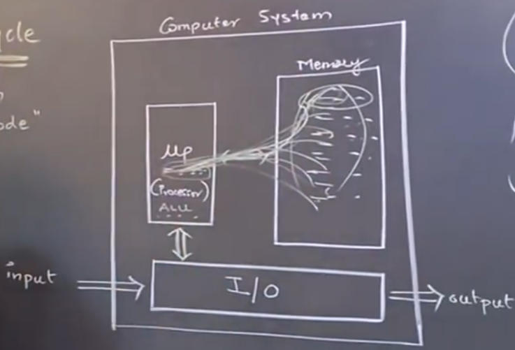
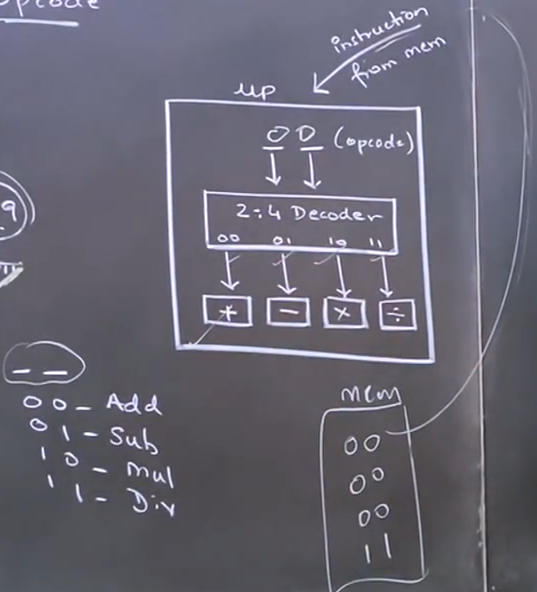

Introduction
Microprocessor use when we run a program
Mew p (Mp) – Microprocessor

Compuer System
- MP(Microprocessor)+I/O+Memory
Data v/s Program
=> Data & program both store in memory
Whatsapp is a program & whatsapp message, vedios, images are all data
- Microprocessor have ALU (Arithmatic Logical Unit)
Program is a set of instructions - Memory received program through I/O devices
- Microprocessor received memory store instructions through System Bus that
called
fetch
- Allows Microprocessor fetch instructions one by one from memory
- then Microprocessor Decode (to understand) instructions one by one from
Opcode
- Instructions types
- a=a+b; //higher level language[HLL] (for understand easyly) Ex: C, C++,
Java, Python,..., etc.
- ADD B,C; //ASM(assemble language) Use in the subject
- 01101010011; Machine Language [M/L], Low Level Language (LLL), bin , obj,
opcode
- In Memory, store all data & programs in binary (0,1)
- we use Higher level language & Assembly language to write a programs
[instructions]
Compiler: We compile a program to convert
Higher level program to Machine level language & also Compiler is a
programAssembler: to convert Assemble language
to Machine level languageOpcode: Instructions binary pattern called
Opcode. Ex: 01101011 Opcode/Operation Code/binary code of the operation- Word Length: Processor how many task perform in a particular time
- Microprocessor Decode (to understand) instructions one by one from Opcode
- but the one by one instructions done work very faster. Today processors
speed in Ghz
- Ex: 3.5GHz = 350000000 operations/second
- Hrz means frequency. Means how many operations can done
in one second
- Giga means bellion
- unit 10 100 1000 thousend/kilo 10,000t 100,000t, 1Milliun/Mega (1000000)
10M (10000000) 100M (10000000) 1Billiun/Giga (100000000) 10B 100B 1Trilliun/Tera
